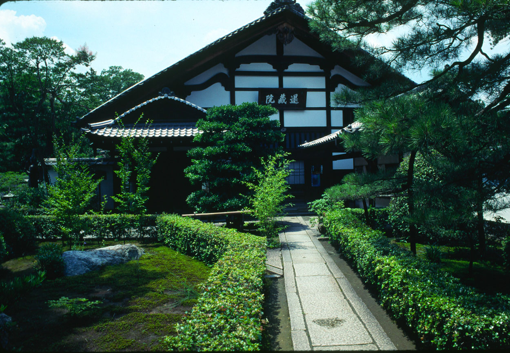
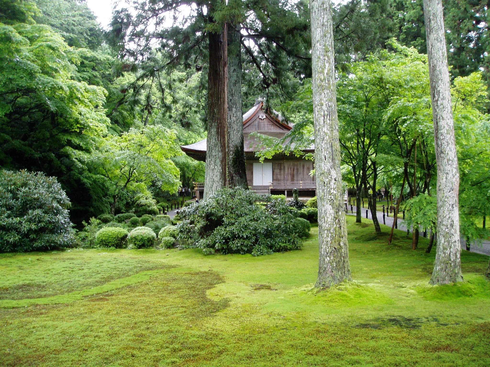
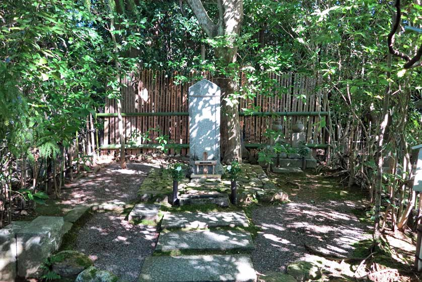
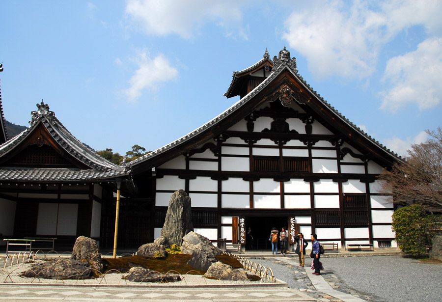
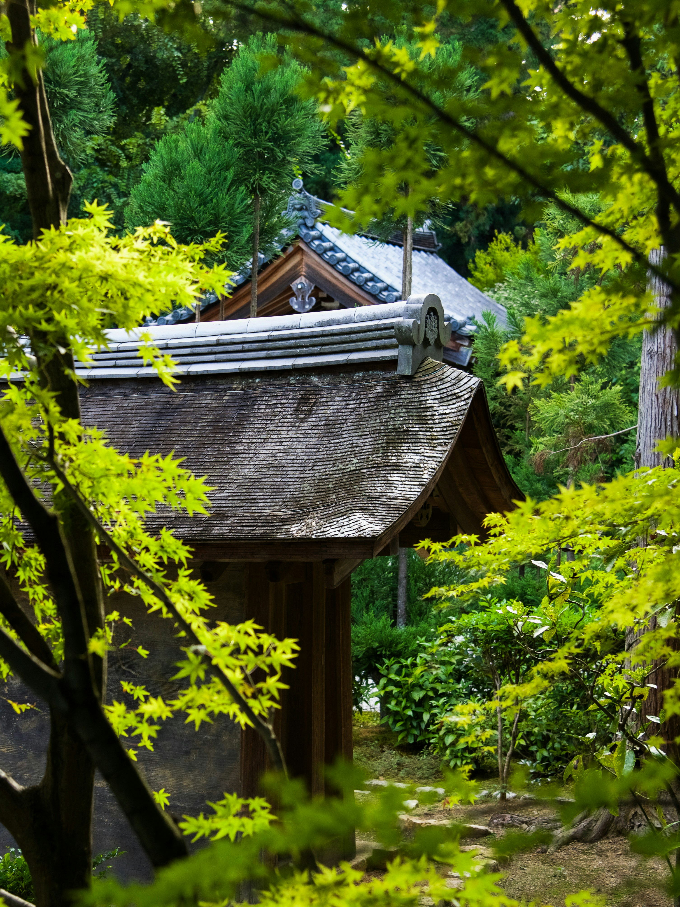

Kiyomizu-dera

Le Yoshimine-dera, situé sur la montagne Yoshimine, est un temple bouddhiste ancien, fondé au VIIIe siècle. Il est célèbre pour sa beauté naturelle et ses vues panoramiques sur la vallée, ainsi que pour ses magnifiques jardins et bâtiments historiques.
Voir sur Google Maps.
Plus ancien temple secondaire du temple bouddhiste Myoshin-ji, il fut construit en 1404.
Ce lieu contient une ancienne peinture classée bien culturel au japon et deux magnifiques jardins.
Taizo-in

Sanzen-in
Ce temple situé au Nord Est de Kyoto, à Ohara, est réputé pour son art végétal.
Vous serez émerveillés en toute saison par les jardins. Il contient également la triade d’Amida Nyorai flanquée de serviteurs, trésor national.
Koetsu-ji est un petit temple du Nord de Kyoto célèbre pour son jardin magnifique en automne et à la saison des cerisiers et ses sept maisons à thé.
Voir sur Google Maps.Koetsu-ji

Tenryu-ji
Le Tenryu-ji est un temple zen majeur de Kyoto, fondé en 1339, et inscrit au patrimoine mondial de l'UNESCO. Son jardin traditionnel, conçu par le maître de jardinage Muso Soseki, est un exemple parfait de l’esthétique zen.
Voir sur Google Maps.
Le Ryoan-ji, également situé à Kyoto, est un temple zen réputé pour son jardin sec, considéré comme l’un des plus célèbres exemples de jardins japonais. Ce jardin minimaliste, avec ses 15 pierres disposées de manière stratégique, invite à la méditation et à la réflexion.
Voir sur Google Maps.Ryoan-ji
